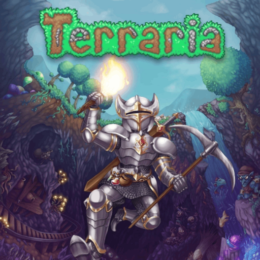

🎮 GameLog
Login
Home
Sandbox
Atividade 3
Minha Lista de Jogos
Minecraft
Bloons TD 6
Brawl Stars
Stardew Valley
Terraria
Celeste
Imagem Dinâmica e Responsiva
Esta imagem irá se ajustar ao tamanho da tela.
